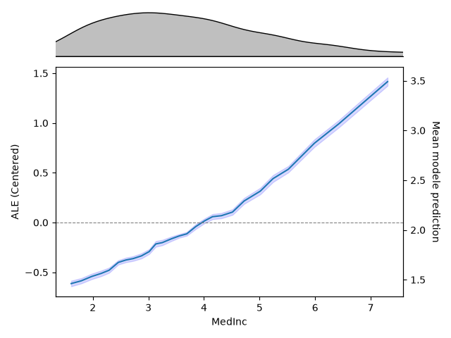
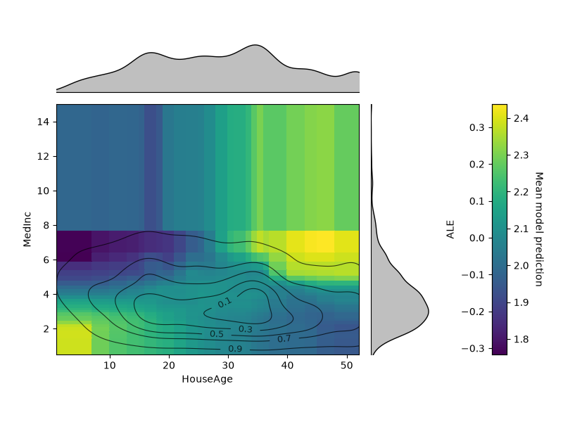
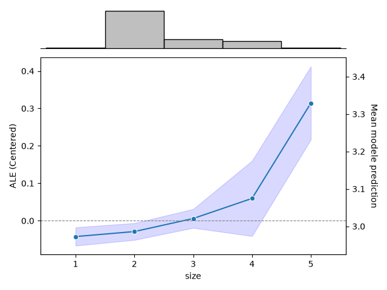

Note
Go to the end to download the full example code.
Visualization with Accumulated Local Effects (ALE)#
This example demonstrates how to use Accumulated Local Effects (ALE), as defined by Apley and Zhu[1], to interpret machine learning models within the hidimstat library.
ALE plots allow you to examine a model’s dependence on a single feature or a pair of features. Unlike Partial Dependence Plots (PDPs), ALE avoids extrapolation bias, which occurs when the model is used to predict from out-of-distribution samples, by averaging localized differences in predictions within conditional intervals.
Loading the California Housing dataset#
We will use the California Housing dataset. The goal is to predict the median house value based on 8 demographic and geographic attributes.
This dataset contains features such as MedInc (Median Income), AveRooms (Average Rooms), and geographical coordinates, which are naturally strongly correlated.
import matplotlib.pyplot as plt
import pandas as pd
from sklearn.datasets import fetch_california_housing
data = fetch_california_housing()
X = pd.DataFrame(data.data, columns=data.feature_names)
y = data.target
print(f"Dataset shape: {X.shape}")
print(f"Dataset features: {data.feature_names}")
Dataset shape: (20640, 8)
Dataset features: ['MedInc', 'HouseAge', 'AveRooms', 'AveBedrms', 'Population', 'AveOccup', 'Latitude', 'Longitude']
Training a RandomForestRegressor#
We train a model to solve the prediction problem. For this example, we will use a RandomForestRegressor from scikit-learn.
from sklearn.ensemble import RandomForestRegressor
from sklearn.model_selection import train_test_split
X_train, X_test, y_train, y_test = train_test_split(
X, y, test_size=0.3, random_state=92
)
model = RandomForestRegressor(random_state=92)
model.fit(X_train, y_train)
r2_test_score = model.score(X_test, y_test)
print(f"R² score on the test set: {r2_test_score:.2f}")
R² score on the test set: 0.80
Accumulated Local Effects for a Single Continuous Feature#
Let’s look at MedInc (Median Income). Mathematically, the 1D ALE calculates the localized differences in predictions as the feature moves across small quantile bins, accumulates them, and centers the final curve around zero.
How to Read the Plot:#
The Marginal Strip (Top): Shows the distribution of the data. ALE values are reliable where data is dense, and should be taken with a grain of salt in sparse regions.
The left Y-Axis (ALE Value): The value represents the relative contribution of that specific feature value compared to the mean prediction of the dataset. For instance, an ALE value of +0.5 means that when MedInc is at that level, the model predicts a house price 0.5 units ($50,000) higher than average, exclusively due to MedInc’s behavior.
The right Y-Axis (Mean model prediction): The value corresponds to the centered value of the ALE shifted to the model mean.

Accumulated Local Effects on a Pair of Features#
The 2D ALE isolates pure second-order interaction effects. Here, we plot the interaction between HouseAge and MedInc.
How to Read the Plot:#
Because main effects are completely removed, the values on this plot show only the effect from the interaction between the two variables.
A value of 0 means the two features act completely independently (their combined effect is just the sum of their individual parts).
Positive or negative areas indicate that the combined effect is stronger or weaker than what the individual curves would imply.
The level sets display the iso-proportions of the 2D density of the data, meaning for instance that 30% of the probability mass lie inside of the contour drawn for 0.3.

Accumulated Local Effects for a Single Discrete Feature#
Let’s see how ALE handles discrete features. We will use the Tips dataset.
Let \(x_0, x_1, ..., x_n\) be the unique values of the feature of interest. For each bin \([x_k, x_{k+1}]\), the local effect is estimated as the average difference in model output when the feature moves from the lower to the upper bin edge (i.e., \(x_k\) and \(x_{k+1}\)) across all samples that fall within that bin. The cumulative sum of these average effects gives the (uncentered) ALE curve, which is then centered so its weighted mean is zero.
import seaborn as sns
data = sns.load_dataset("tips")
X_discrete = data.drop(columns=["tip"])
y = data["tip"]
X_discrete = pd.get_dummies(X_discrete, drop_first=True).astype(float)
X_discrete_train, X_discrete_test, y_train, y_test = train_test_split(
X_discrete, y, test_size=0.3, random_state=92
)
model_discrete = RandomForestRegressor(random_state=92)
model_discrete.fit(X_discrete_train, y_train)
ale_discrete = ALE(model_discrete, feature_names=X_discrete.columns)
_ = ale_discrete.plot(
X_discrete_test,
features=X_discrete_test.columns.get_loc("size"),
feature_type="categorical",
percentiles=(0, 100),
)
plt.show()

References#
Total running time of the script: (0 minutes 23.649 seconds)
Estimated memory usage: 321 MB